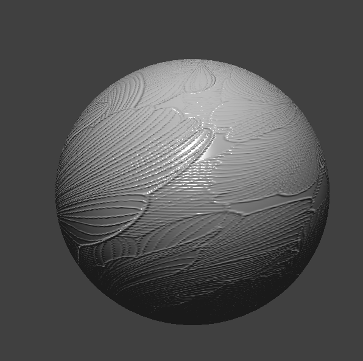

In this homework, we were able to simulate how a piece of cloth would react in real life by applying physics into our simulation.
We had to first understand how the masses and springs work for models and how the cloth would react if it's pinned in 2 corners or 4 corners.
Afterwards, we were able to handle collisions where the cloth would fall on the sphere. We were able to showcase how the cloth lie on the sphere and what it would look like.
Moreover, we tested how the cloth would react if collided on itself and how it would fold on itself. In this implementation, we had to be careful for clipping!
Lastly, we were able to deal with shaders and set the appearance to be have different shading, mapping, or to have a reflection!
Overall, this homework really showed us how animated films are able to display things such as hair so realistically. By adjusting attributes, height, normals, and shaders, we
are able to get a different result that we want.
Part 1: Masses and springs
The first step here is to clear old data by removing the previous cloth state. Then to create point masses we loop over each pair of coordinates (x,y)corresponding to points in our grid, and then place masses in the xz plane for a fixed y = 1, and place masses in the xy plane with a tiny random offset. Next, we set ispinned to true in the case of (x,y) being in the pinned list structure. We store these pointmasses in row major order, where the index at which it is placed is idx = y*num_width_points + x. After this, spring connections are built by connecting each point mass to its left neighbour if x>0 and above neighbor if y>0. If shearing is on, we connect to the upper left diagonal if both x and y are positive, and the upper right diagonal if x < num_width_points - 1 and y>0. For bending, we connect to the two left longer-range connections if x>1, and the two above longer-range connections if y>1.
For this question, I used chat-GPT to get a working implementation as well as to explain the logic of it after getting multiple pointer errors. Chat gpt showed me the error was in forgetting to check if x>1 and y>1 when doing the respective bending connections – I was trying to connect to a point outside of the grid, causing the error. I learned the necessity of such checks when writing code which iterates within some data structure.
Cloth Wireframe
Without Shearing Constraints
With Only Shearing Constraints
With All Constraints
Part 2: Simulation via numerical integration
When modifying the spring constant (ks), I noticed that the cloth was very loose and lost it's structure when I decreased the spring constant to be 1. This made the cloth look as if it were a jelly material compared to the default value.
When I increase the spring constant to 50000, the piece of cloth does not droop down as much, resisting the stretch of the pinned corners. Instead the cloth becomes much less floppy and looks more smooth since it has less wrinkles/folds on the cloth. The material almost looks like a leather type of material since the shape is held tightly.
When modifying the denisty, I noticed that the cloth was flying around and moving very quickly around itself since it was pinned to the 2 corners when I decreased the density to 0.1. This reminded me of like a pinwheel being moved by wind, so since the density of the cloth is low, the cloth becomes light and reacts quickly compared to the default density.
When I increase the density 1500, starts to sag since the swoop of the cloth lowers down due to the heaviness of the cloth. The fabric starts to move more as well since it looks like the springs are struggling to hold the weight of the cloth.
When modifying the damping, I noticed that the cloth fell very quicly when I decreased the damping to 0%. It fell so quicly that it used momentum and swung the cloth all the way back just like a swing on a playground.
When I increase the damping to 1%, it takes about 4x as long to reach the resting state. I provided an image at what the cloth looks like at 6 seconds with 1% damping since the default value (0.2%) would reach the final resting state at 6 seconds.
ks:
Low ks
Default ks
High ks
density:
Low density
Default density
High density
damping at 6 seconds:
Low damping
Default damping
High Damping
Pinned 4:
POV 1
POV 2
Part 3: Handling collisions with other objects
For the plane intersection, we first look the last frame’s position, and the current frame’s position, and compute the signed different between them with double d0 = dot(normal, pm.last_position - point) and double d1 = dot(normal, pm.position - point). We say that they have crossed if they different in sign, the mass has crossed from one side of the plane to the other. We then find a correct vector between the point and plane by solving for t when the plane equation is satisfied, and add this vector plus a small offset in the direction perpendicular to the plane. When then apply friction by scaling the correction with (1- friction), and update pm.position accordingly. Also, we forcefully push it out in the same manner if merely a single distance is less than zero. For the sphere intersection, we simply check if the euclidean distance between a point an the origin is within the radius, and if so, we recognize the point as being within the sphere. In this case, we push it out by computing the tangent point to the surface, where the correction is tangent - pm.position, and multiply the correction by (1-friction). Finally, we integrate collisions in cloth simulation by calling each object’s collide method for every point mass, and updating positions in the case of ac collision.
Upon implementing this part at first, there were case where the cloth was intersecting with the plane a little bit after being dropped thereon. I asked chat gpt for help, and it identified that I wasn’t pushing out objects after they had already been behind the plane (the case where merely d1<0). I learned that this is useful because this means that the cloth has ended partially behind a frame.
For the differences in the below results, we can see that the ks = 500, vs. the ks = 5000, is more droopy and elongated; we can also see that the ks = 50000 is more stubby compared to ks = 5000.
ks = 5000
ks = 500
ks = 50000
Cloth Lying at Rest
Cloth Lying at Rest
Part 4: Handling self-collisions
First, the code clears any hash map from before. We then compute a hash key based on which 3d box the point mass belongs to. We then point a pointer from this point mass to the bucket in the hashmap. To check collisions, we look up the bucket of a point mass, and checks whether points in its same bucket are within 2*thickness of each other, and push the points outward if this is the case. These push outs and averaged and then scaled down by the number of simulation steps. To integrate this, for each frame, after employing Verlet Integration, we call build_spatial_map to rebuild the hash of map positions, and then run self_collide for each mass.
Upon implementing this at first, my cloth was still clipping itself, and self intersecting itself. I asked chat-gpt to implement this, and I then realized that my problem was that I wasn’t checking often enough whether there was a collision – checking multiple times per iteration fixed the problem. I learned that because the forces repel so quickly, they are pushed quicker than we check for a collision in some cases, so they collide without us doing anything about it.
With higher density, I noticed that the cloth stretches more and moves more quickly; for lower density, the cloth lands more gently on the plane and doesn't sag as much. The greater stretching with higher density is due to te greater momentum leading to greater colision forces (I used Chat-GPT to confirm that this interpretation is correct). With higher ks, the cloth resists stretching more and bounces less due to the greater stiffness of the springs (I likewise used Chat-GPT to confiorm the correctness of this interpretation as to why this is).
Process of Cloth Falling
Stage 1
Stage 2
Stage 3
Stage 4
Stage 5
Stage 6
Stage 7
Part 5: Shaders
A shader program is made up of different shaders such as our vertex shader and fragment shader which allows us to visualize and model how our 3D objects look like. It handles transforming vertex position from world space to camera space.
The vertex and fragment shaders work together to create lighting and material effects since the vertex shader calculates the geometry and data needed to pass to the fragment shader to figure out the color of each pixel.
The vertex shader handle the vertices of an object to define the position and shape while the fragment shader determines the fill color of the pixel by seeing how the normals affect the light.
Vertex shaders affects the geometry of a shape since it depends on the vertice position while the fragment shader relies on normals passed in from the vertex shader.
Blinn-Phong shading model allows us to showcase how lights interacts with an object with ambient lighting, diffuse reflection, and specular highlights. When all these componenets are combined together, it creates Phong relection since the ambient light allows us to represent the indirect light that gets illuminated on the object, the diffuse reflection allows how the light bounces off the surface, and the specular highlights represent the shinniness of an object.
Blinn-Phong Shading:
Only outputting the ambient component
Only outputting the diffuse component
Only outputting the specular component
Entire Bling-Phong model
Texture Mapping:
POV 1
POV 2
POV 3
For bump and displacement mapping, we had to use Blinn-Phong for both and in fact, the fragment shaders are the exact same.
The only difference is in the vertex file where vertx shader for displacement mapping uses (p + n * h(u, v) * k_h) for the position.
Since we changes the vertex shader for the displacement mapping, this affects the shape and position. For bump mapping, we can see
the surface is a lot very smooth especially in the circle, but for displacement there is some craters and does not give a smooth circle appearance.
Bump Mapping:

Sphere
Top View of Cloth
Bottom View of Cloth
Cloth on Sphere
Displacement Mapping:
Sphere
Top View of Cloth.
Bottom View of Cloth
CLoth on Sphere
For bump mapping, there is no difference in the sphere between changing the sphere's mesh coarseness since in the vertex file, we only use the surface normals while the displacement mapping uses the vertex positions.
The bump mapping alters the normals and the displacement ampping affects the vertex position so the number of vertices will impact the smoothness of the object.
For displacement mapping, there is a difference when the mesh coarseness is set to 16 since it looks more deformed and jagged while when the mesh
coarseness is set to 128, it is more smooth. This is because in the vertex shader file, we are dependent on height scaling factor for the position and since we we edited the vertex shader for displacement mapping,
the geometries are affecting the sphere when we adjust the mesh's coarseness. In 128 it looks smoother than 16 since 128 has more vertices to work with than 16 giving 16 a more blocky appearance.